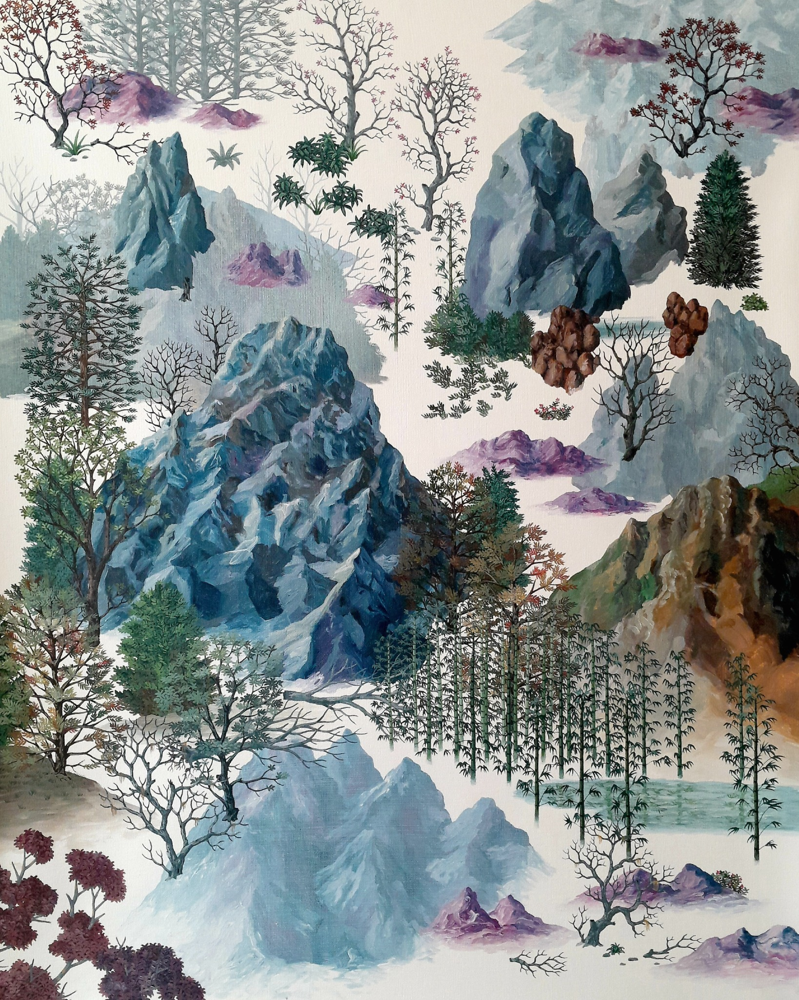

Yushan Variation

Yushan Variation does not seek to represent a specific landscape, but rather to construct a pictorial variation through recurring motifs such as rocks, trees, bamboo, mist, and empty spaces. Drawing on the landscapes of Yushan, the work avoids any descriptive or documentary intention.
Each element retains a degree of autonomy while participating in a broader spatial order where repetition and difference coexist. Emptiness becomes an active component of the composition, while space emerges through the relationships between forms, intervals, and rhythms, without establishing a single focal point.
The painting thus proposes a dialogue between different landscape traditions, approaching landscape not as a place to be reproduced, but as a visual language whose elements can be reorganized in multiple ways.